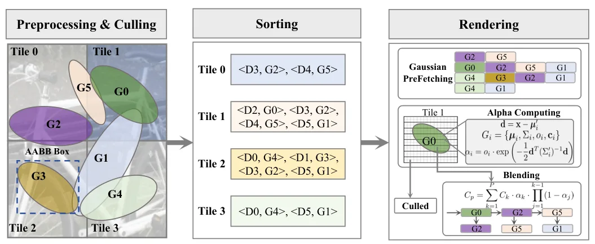
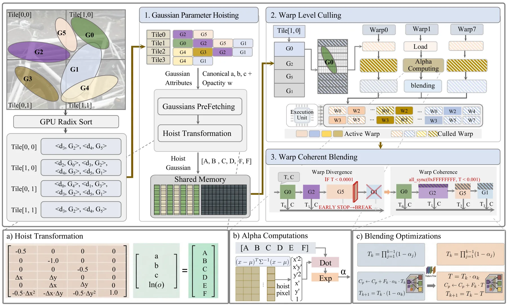
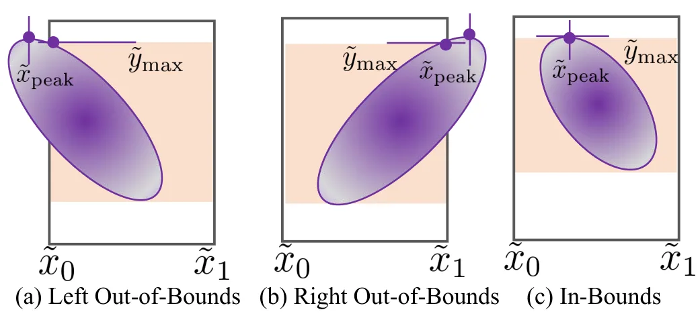
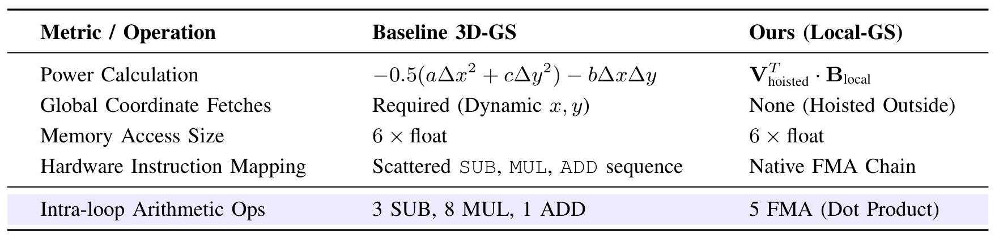
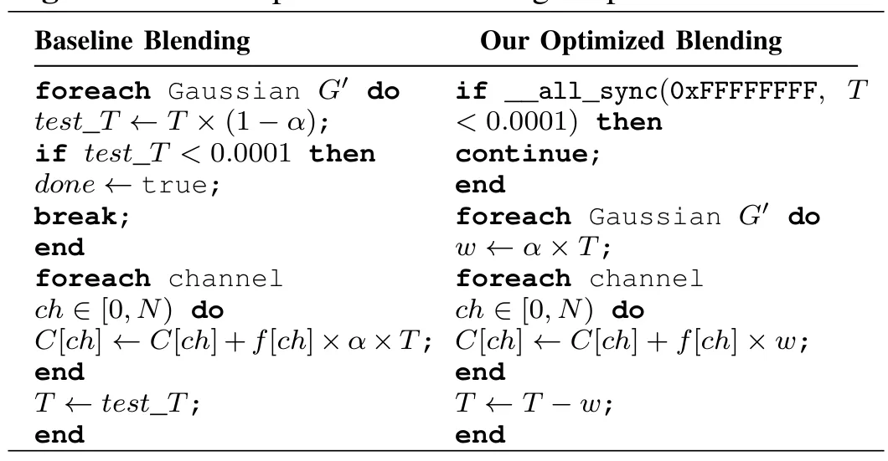
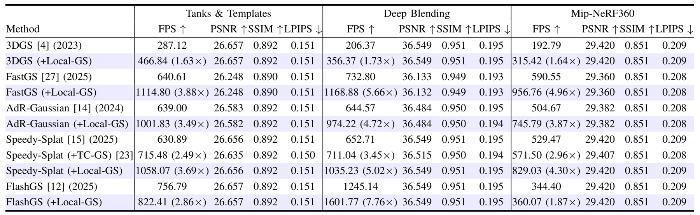

Local-GS：通过瓦片局部 Warp 一致性加速 3D Gaussian SplattingLocal-GS: Accelerating 3D Gaussian Splatting via Tile-Local Warp Coherence
对 3DGS-SLAM 或在线重建中的实时渲染瓶颈有工程参考价值；但论文核心是渲染加速，不直接处理定位、地图更新或闭环一致性。
一句话工作总结
Local-GS 从 GPU warp 执行一致性角度重排 3DGS 渲染，减少分支和冗余计算，可作为 3DGS 系统的即插即用加速。
摘要
3D Gaussian Splatting 已成为实时新视角合成的重要表示，但高斯 primitive 的不规则空间分布常导致 GPU 利用率低下，warp divergence 和冗余计算会降低渲染性能。Local-GS 提出一种 warp-coherent rendering 范式，按照 SIMT 执行边界而非场景几何组织高斯。方法包含三个 warp-coherent 阶段：在 tile level 预计算共享参数的 hoisting 阶段，丢弃无贡献 warp 的 culling 阶段，以及用统一指令流替代 per-pixel branching 的 blending 阶段。多数据集实验显示 Local-GS 能在不降低质量的情况下提升效率，并可作为 plug-and-play 优化叠加到多个 baseline，在 Deep Blending 场景最高达到 7.76 倍加速。
3D Gaussian Splatting (3DGS) has significantly advanced real-time novel view synthesis by representing scenes as dense collections of anisotropic 3D Gaussian primitives. However, the irregular spatial distribution of Gaussians often leads to poor GPU utilization, as warp divergence and redundant computation degrade rendering performance. To address this, we present Local-GS, a warp-coherent rendering paradigm that, organizes Gaussian primitives with respect to SIMT (Single Instruction, Multiple Threads) execution boundaries rather than scene geometry. Specifically, we propose three warp-coherent stages: a hoisting stage that precomputes shared parameters at tile level, a culling stage that discards warps with no contribution, and a blending stage that replaces per-pixel branching with a uniform instruction stream. Across extensive benchmarks on multiple datasets, Local-GS improves efficiency without compromising quality. As a plug-and-play optimization, it provides additional performance gains to all tested baselines, culminating in a $7.76\times$ speedup on Deep Blending scenes.
中文解读摘录
- 链接：abs / PDF；作者：Yang Luo, Yan Gong, Yongsheng Gao, Jie Zhao, Xinyu Zhang, Huaping Liu；类别：cs.CV；采集 score=10。
- 核心思路：3DGS 的高斯空间分布不规则会造成 GPU warp divergence 和重复计算；Local-GS 按 SIMT 执行边界而非场景几何组织渲染流程。
- 方法要点：提出 tile-level 参数 hoisting、无贡献 warp culling、用统一指令流替代 per-pixel branching 的 blending 三阶段；作为 plug-and-play 优化可叠加到多个 baseline。
- 关注点：如果 3DGS-SLAM 或在线重建系统瓶颈在渲染/重渲染，该类工程优化值得跟踪；摘要报告 Deep Blending 场景最高 7.76 倍加速，需要看质量损失、内存开销和真实移动端 GPU 适配。
图表/页面预览

{kind=link}

{kind=link}

{kind=link}

{kind=link}

{kind=link}

{kind=link}
